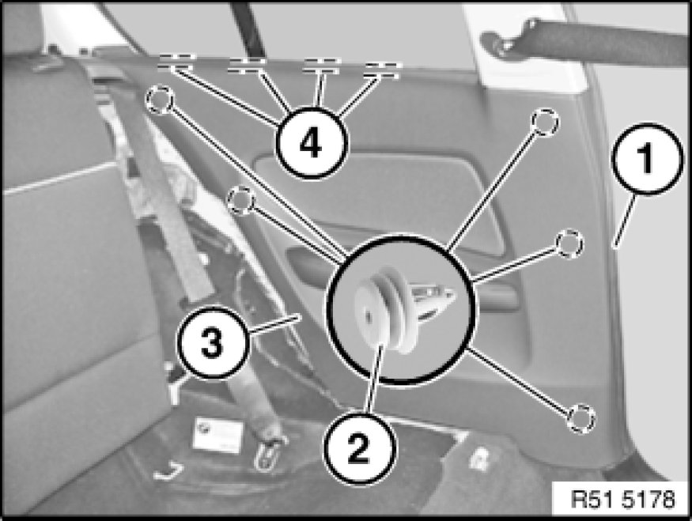
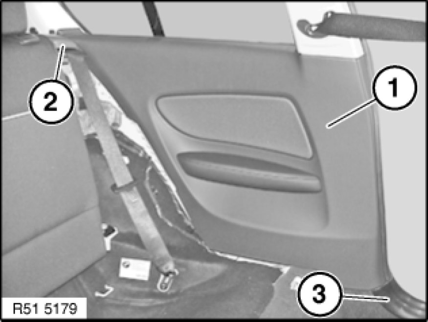

Removing and Installing Rear Left or Right Side Trim Panel
51 43 000 - Removing and installing rear left or right side trim panel

Necessary preliminary tasks:
- Remove rest side section Removing and Installing/Replacing Rest Side Section on Left or Right Rear Seat Backrest
- Remove rear seat Removing and Installing / Replacing Rear Seat
E81 only:
- Remove trim panel for roof pillar at rear Removing and Installing/Replacing Trim Panel For Left or Right Rear Roof Pillar (C-pillar)

Detach mucket (1) in area of side trim panel (3).
Unfasten side trim panel (3) at clips (2) and retainers (4) and remove.
Installation:
If necessary, replace defective clips (2) and retainers (4).

Installation:
Install side trim panel (1) in area of trim covers (2 and 3).
Position side trim panel (1) correctly at retainers and clips and clip into position.